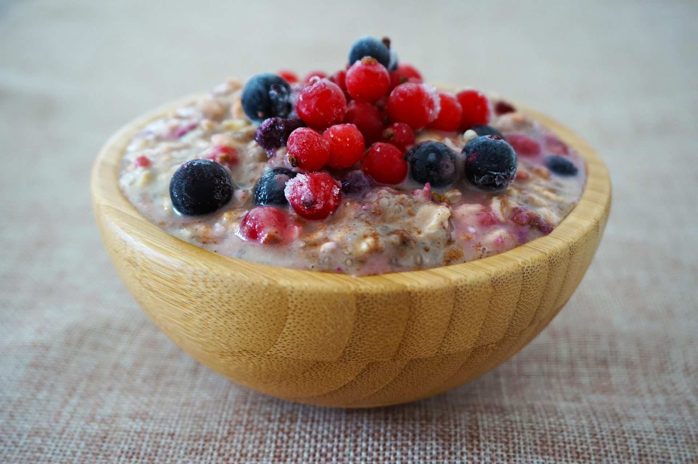
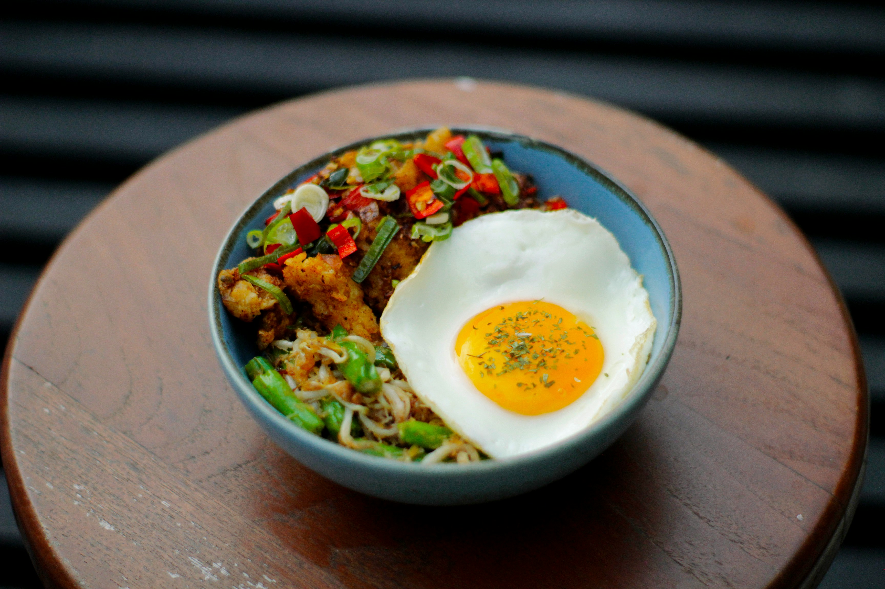
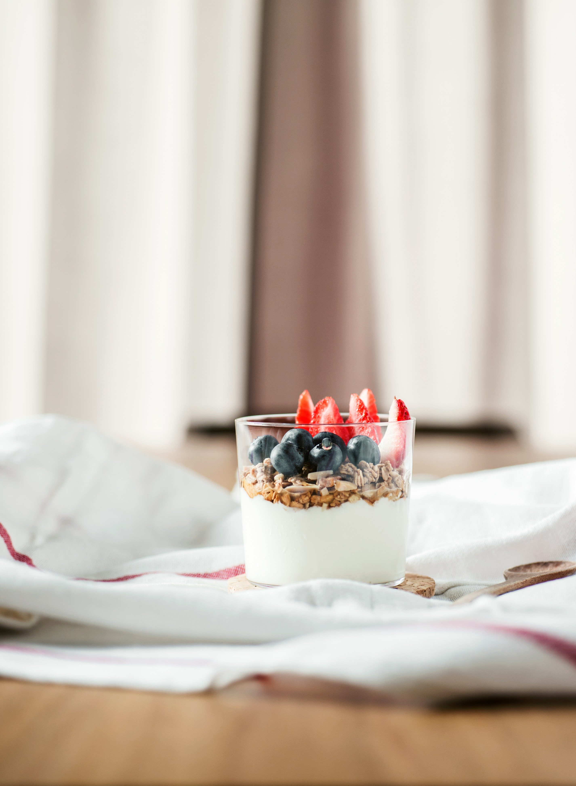

Breakfast Meal Prep
Starting your day with a prepared breakfast can make busy mornings easier. These simple breakfast ideas can be made ahead of time so you can save time and still enjoy a filling meal.
Easy Breakfast Ideas
Overnight Oats
Overnight oats are an easy breakfast that can be prepared the night before and stored in the refrigerator.
Ingredients:
- 1/2 cup rolled oats
- 1/2 cup milk
- 1/4 cup Greek yogurt
- 1/2 cup fresh berries
- 1 teaspoon honey
Directions:
- Add the oats, milk, and Greek yogurt to a container.
- Mix everything together.
- Top with berries and honey.
- Cover and refrigerate overnight.

Egg & Veggie Breakfast Bowls
These breakfast bowls are a simple way to prepare a filling breakfast ahead of time.
Ingredients:
- 2 eggs
- 1/2 cup diced potatoes
- 1/4 cup bell peppers
- 1/4 cup spinach
- Salt and pepper to taste
Directions:
- Cook the potatoes until they are tender.
- Cook the peppers and spinach in a pan.
- Scramble the eggs.
- Combine everything in a meal prep container.
- Refrigerate until ready to eat.

Greek Yogurt Parfait
A yogurt parfait is a quick meal prep option that requires very little preparation.
Ingredients:
- 1 cup Greek yogurt
- 1/2 cup strawberries
- 1/4 cup blueberries
- 1/4 cup granola
- 1 teaspoon honey
Directions:
- Add Greek yogurt to a container.
- Add the strawberries and blueberries.
- Store the granola separately so it stays crunchy.
- Add the granola and honey when you are ready to eat.
